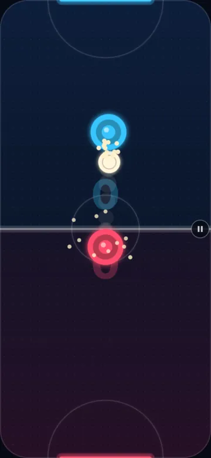
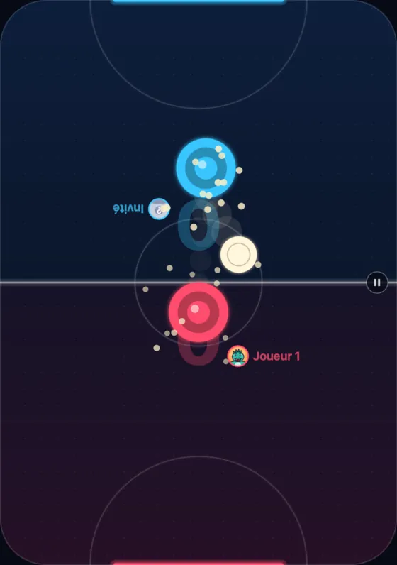
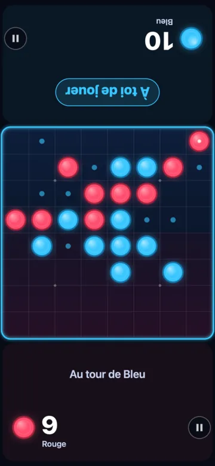
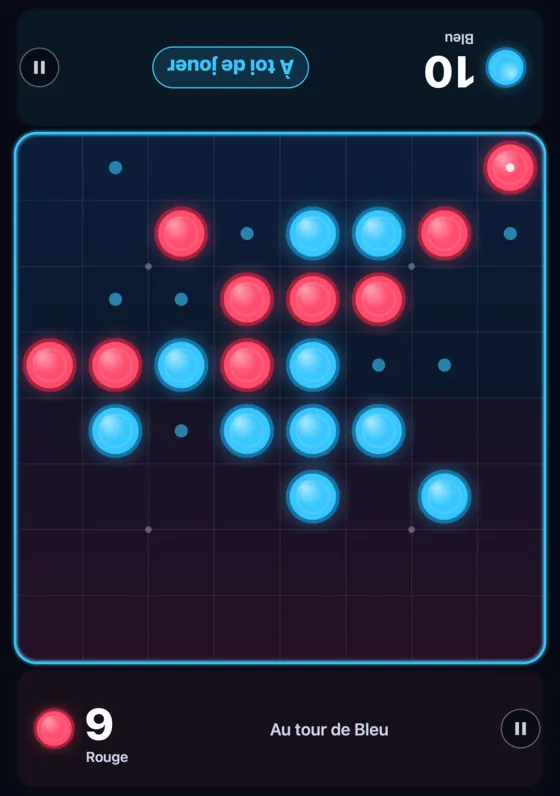
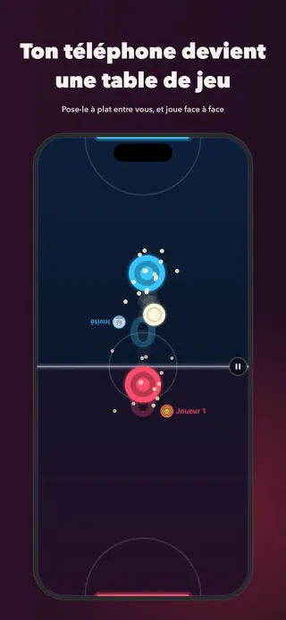
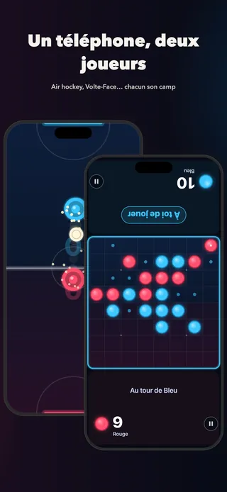
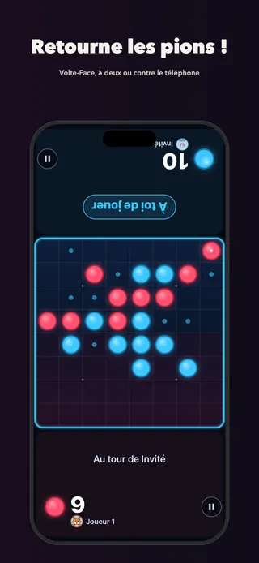
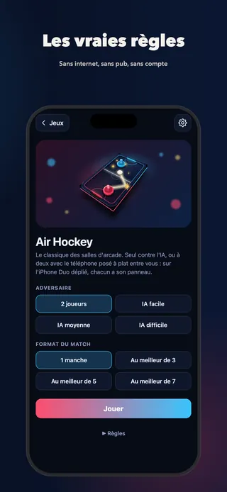
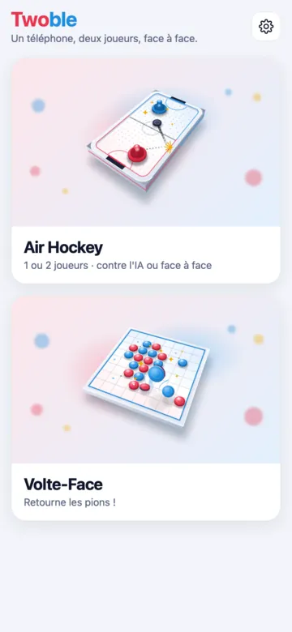

Air Hockey
Jeu d'adresse · 1 ou 2 joueurs
- Pousse le palet, défends ton but : le premier à 7 buts gagne.
- Les vraies règles : engagement, faute des 7 secondes.
- 1 manche ou au meilleur de 3, 5 ou 7.
- 7 décors de table, 5 ambiances sonores.
Pose ton téléphone à plat entre vous deux : il devient une table de jeu. Chacun son côté de l'écran, chacun ses scores à l'endroit, et c'est parti.
Twoble arrive très bientôt. L'app est gratuite.


Pas besoin de deux appareils, ni de wifi, ni de compte. Juste quelqu'un en face de toi.
Entre vous deux, sur la table, comme un petit plateau de jeu.
Chaque joueur a sa moitié d'écran. Les textes et les scores se tournent vers lui : personne ne lit à l'envers.
Les règles sont expliquées avant chaque partie. Un match, une revanche, et on recommence.
Un jeu d'adresse rapide et un jeu de réflexion. À deux face à face, ou seul contre l'IA.

Jeu d'adresse · 1 ou 2 joueurs
Jeu de réflexion · 1 ou 2 joueurs
Déplié et posé à plat, l'iPhone Duo devient une vraie petite table : la pliure tombe pile sur la ligne du milieu, et chacun a son panneau.
Pas d'iPhone Duo ? Sur tous les autres iPhone, sur iPad et sur Android, pose simplement l'appareil entre vous.






Rien ne coupe la partie, ni bannière ni vidéo.
Train, avion, vacances : pas besoin de réseau.
Tu ouvres l'app, tu joues. Aucune donnée collectée.
Dans les deux jeux, en 3 niveaux : facile, moyenne, difficile.
Expliquées avant chaque partie, même pour les plus jeunes.
L'app suit l'apparence du téléphone, ou ton choix.
Une musique au choix par jeu, avec trois volumes : musique, ambiance, effets.
L'app parle la langue de ton téléphone.
Oui. Twoble est gratuit et sans publicité. Aucun compte n'est demandé.
Non. Les deux jeux fonctionnent entièrement hors ligne : dans le train, en avion, en vacances ou au fond du jardin.
Oui. Air Hockey et Volte-Face se jouent aussi contre l'IA, avec trois niveaux : facile, moyenne et difficile.
Sur iPhone et iPad (iOS 15 ou plus récent) et sur Android (Android 7 ou plus récent). L'app est optimisée pour l'iPhone Duo et les téléphones pliables.
Oui. L'app est classée 4+, sans pub et sans collecte de données. Les règles sont expliquées simplement avant chaque partie, et les coups possibles s'affichent dans Volte-Face.
En 13 langues : français, anglais, espagnol, portugais (Brésil), allemand, italien, néerlandais, polonais, turc, japonais, coréen, chinois simplifié et chinois traditionnel. L'app suit la langue du téléphone.
En famille, entre amis, en couple, à l'apéro ou en voyage : on sort le téléphone et c'est parti.
Twoble arrive très bientôt. L'app est gratuite.